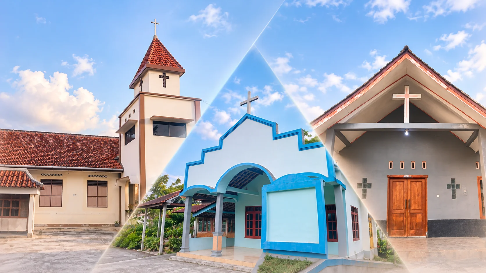

Shalom, selamat datang di
GKJTU Kinasih
Sedang mengambil pengumuman terbaru untuk Anda…

TENTANG GEREJA
Sejarah Singkat
GKJTU Kinasih adalah persekutuan jemaat yang berakar dalam firman Tuhan dan bertumbuh dalam kasih Kristus untuk menjadi berkat nyata bagi sesama di tengah masyarakat. Sejak didirikan, GKJTU Kinasih telah menjadi wadah bagi generasi-generasi jemaat untuk mengalami persekutuan yang dalam, pelayanan yang penuh dedikasi, dan kesaksian yang nyata dalam kehidupan sehari-hari. Kami percaya bahwa gereja adalah tubuh Kristus yang hidup, dipanggil untuk terus berkembang dan berdampak positif bagi komunitas sekitar dengan semangat kebersamaan dan kasih sejati.
Visi
Menuju Gereja yang Dewasa, Mandiri dan Misioner.
Misi
1. Memantapkan kehidupan bergereja yang dewasa
2. Mengupayakan kemandirian
3. Mewujudkan gereja yang misioner
Kepengurusan
Pengurus pelayanan GKJTU Kinasih